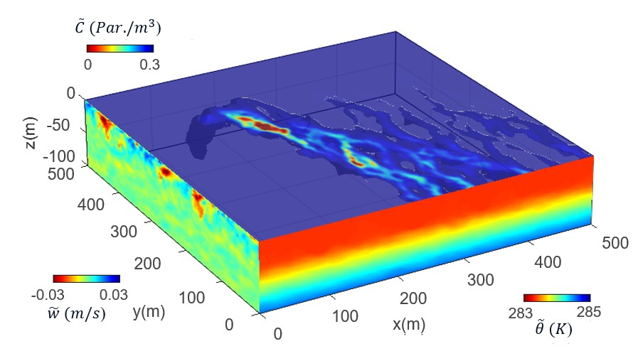

Mahdi Farsi
I am an accomplished PhD candidate in Mechanical Engineering at the University of Houston, with over eight years of research experience in advanced CFD, including LES,
turbulent flow, heat transfer, two-phase flow, and wind energy applications. I am proficient in both commercial software (Ansys Fluent, CONVERGE CFD)
and custom code development (Fortran, C, Python), with a proven track record of designing and implementing simulation strategies that have led
to impactful publications and successful multidisciplinary collaborations.
Email /
LinkedIn /
CV
|

|
Research/Work Interests
- Computational Fluid Dynamics (CFD)
- Large-Eddy Simulation (LES)
- Numerical Heat Transfer
- Turbulent Flow
- Renewable Wind Energy
- Wind Tunnel Experiment
|
Work Experience
Graduate Research Assistant @ CFD and Turbulence Modeling Group, University of Houston, Houston, TX (Jan 2021 -- Current)
- Performed large eddy simulations (LES) of pollutant transport and dispersion from a localized source in oceanic and atmospheric environments using the open-source LESGO-JHU.
- Developed cognitive algorithms to solve the inverse problem of pollution source localization using autonomous robots under sparse sensing conditions.
- Performed large eddy simulations (LES) of ship channel and shallow bay interactions under wind and wave forcing to understand turbulent mixing mechanisms between a shallow bay and a deep ship channel.
- Conducted particle image velocimetry (PIV) of vertical-axis wind turbine wake flows to analyze the impact of blade helicity on wake characteristics.
- Performed detached eddy simulations (DES) of incompressible flow through various Master Flo Valve (USA) choke valve designs using Ansys Fluent to evaluate flow-induced corrosion in each design.
- Numerically modeled a novel design for metal-organic chemical vapor deposition (MOCVD) equipment, capable of manufacturing superconductor tapes with superior electrical performance, using Ansys Fluent.
Graduate Teaching Assistant @ University of Houston, Houston, TX (Jan 2021 -- Current)
- Served as teaching assistant in courses: Fluid Dynamics, Heat Transfer, Thermodynamics, and Experimental Methods.
- Mentored students through office hours and one-on-one communication.
- Graded exams and assignments and reported individual progress to the instructor.
Research Assistant @ Heat Transfer Research Center, Ferdowsi University of Mashhad, Mashhad, Iran (Sep 2019 -- Dec 2020)
- Investigated heat transfer enhancement in mid-size heat exchangers through manipulating flow geometry, both numerically and experimentally.
- Proposed and numerically evaluated a novel pattern of minichannel heat sinks for increasing heat absorption using Ansys Fluent.
Graduate Research Assistant @ MAPFAN Research Institute, University of Tehran, Tehran, Iran (Jan 2017 -- Aug 2019)
- Studied heat transfer mechanisms in mid-size air-cooled turbogenerators using numerical simulation with Ansys Fluent.
- Developed correlations for convective heat transfer coefficient in different cooling paths of air-cooled turbogenerators using statistical techniques.
|
Projects
Selected projects showcasing my work and research.
|
LES Projects
|
|
Transport and dispersion of pollutant particles released from a localized source in the atmospheric boundary layer
|
|
|
|
Oil plumes and dispersion in Langmuir, upper-ocean turbulence
|
|

|
|
Ship Channel and Shallow Bay Interactions Under Wind and Wave Forcings
|
|
|
Source Localization Algorithm
|
|
Cognitive Source Localization Algorithms in the Atmospheric Boundary Layer
|

|
This website's source code is adapted from Jon Barron's template. Much thanks!
|
|